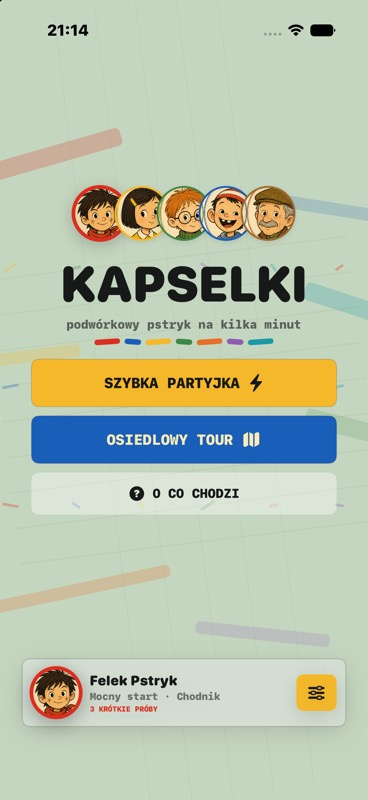
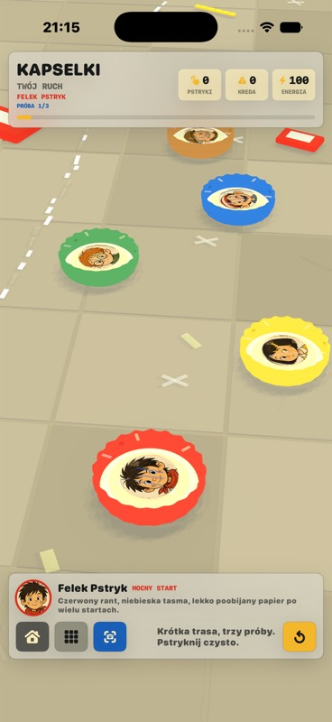
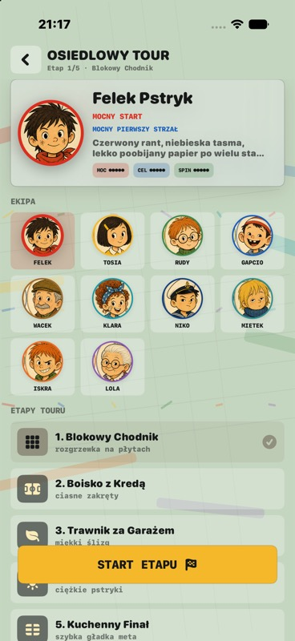
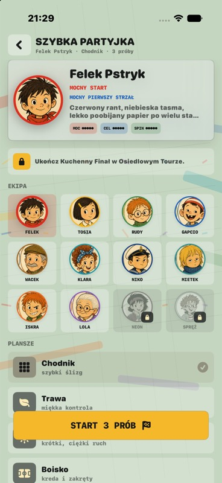
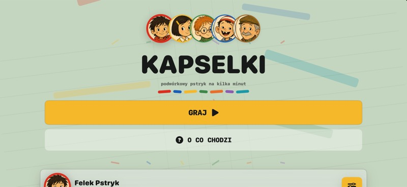
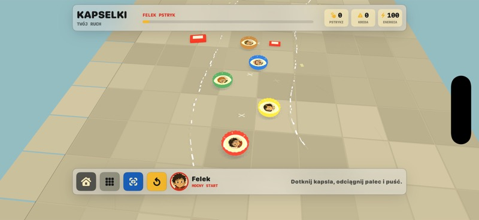
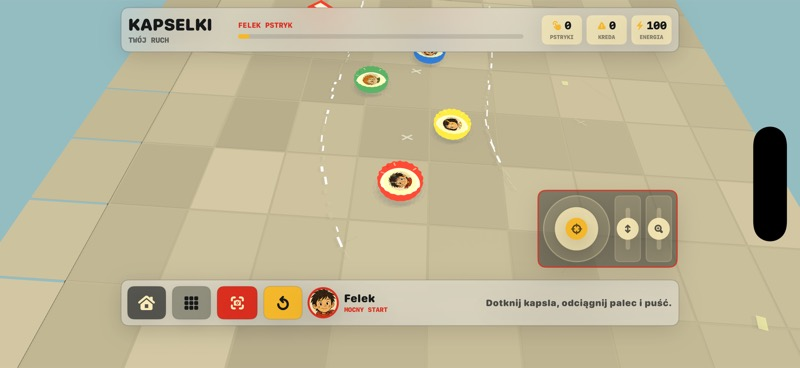

Pstryknij
Dotknij kapsla, odciagnij palec i pusc. Sila strzalu zalezy od tego, jak odwaznie naciagniesz ruch.
App Store sprint
Podworkowy pstryk na kilka minut. Wybierz tryb, odblokuj ekipe i przejedz trase stylem swojego kapsla.
Dotknij kapsla, odciagnij palec i pusc. Sila strzalu zalezy od tego, jak odwaznie naciagniesz ruch.
Jedz miedzy kredowymi krawedziami. Wyjazd poza trase zabiera energie i psuje tempo przejazdu.
Kazda postac ma inny kapsel: mocny start, kontrolowany slizg, spin albo ryzykowne odbicia.
Aktualny build









Ekipa startowa
Felek Pstryk, Tosia Spryt, Rudy Okular, Gapcio Rakieta, Dziadek Wacek, Klara Bandana, Kapitan Niko, Mietek Sen, Ruda Iskra, Babcia Lola, Sprezyna i Neon tworza aktualny zestaw zawodnikow.
Zobacz materialy koncepcyjne
Nastepny cel
Wyrownanie poziomu trudnosci, szybki bieg, progres postaci i jasny rytm pierwszych minut gry.
Testy na telefonie, sprawdzenie dzwiekow, stabilnosci SceneKit i czytelnych hit targetow w sterowaniu.
Ikona, screenshoty, opis, prywatnosc, kategoria gry i paczka metadanych gotowa pod App Store Connect.